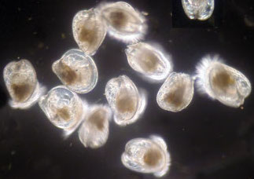
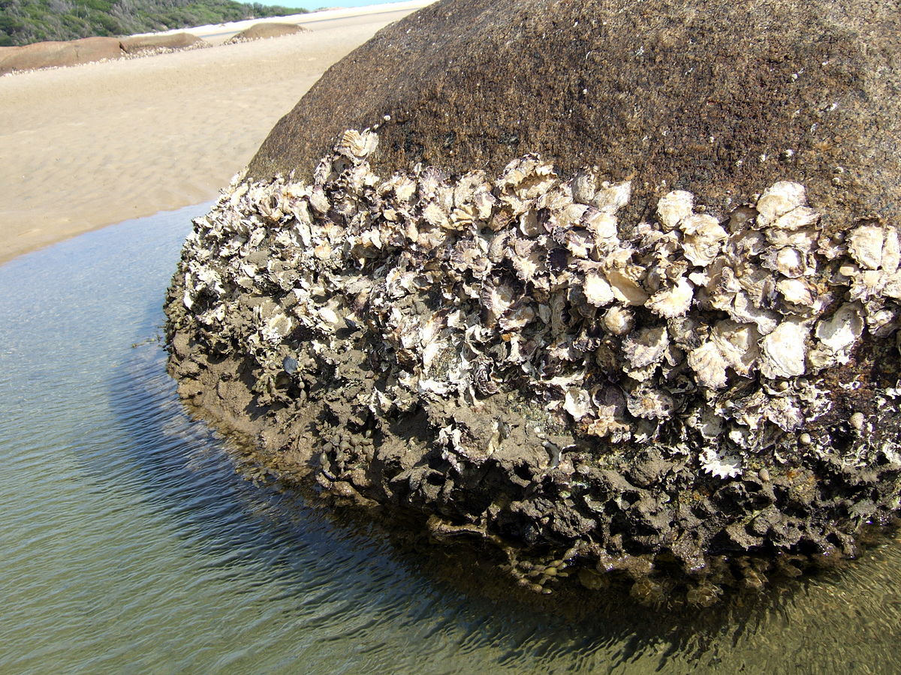

The warm summers are prime season for oysters to lay their eggs. A female oyster can lay around 6 million eggs at one time. The eggs are actually microscopic organisms called planktonic larvae, and it consists of a shell, muscle, and a foot.
Its gender is determined by the salt concentration and temperature of the water. The larvae freely swim for 2 and a half weeks, and then they attach to another oyster shell and they stick to it for their entire lifetime (2-3 years).
As the oysters grow, they make a “glue” and as that happens, it goes through a complete metamorphosis change, which is the meat we eat.